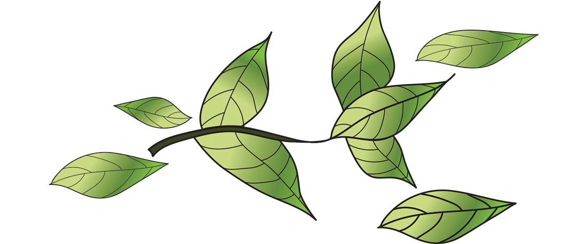

OiLab: the power of natural beauty and determination
Jaarlijks wordt er in de beauty industrie onnodig veel afval geproduceerd, waarvan veel uit hoeveelheden verpakkingen en gebruik van single-use producten op stortplaatsen belanden.
The OiRefill Program
OiLab, een nieuwe beauty bedrijf in Amsterdam, wilt met hun bijdrage van hun nieuwe initiatief, het OiRefill programma, het onnodige afval dat jaarlijks geproduceerd wordt in de beauty industrie verminderen. Met dit initiatief wilt OiLab hun impact op het milieu verminderen en bijdragen aan een schonere en duurzamere planeet. Daarnaast worden de producten gemaakt van authentieke, organische ingrediënten en zijn ze vegan. Hiermee kunnen beauty liefhebbers zich aansluiten op hun streven naar afvalvermindering.
...meer
